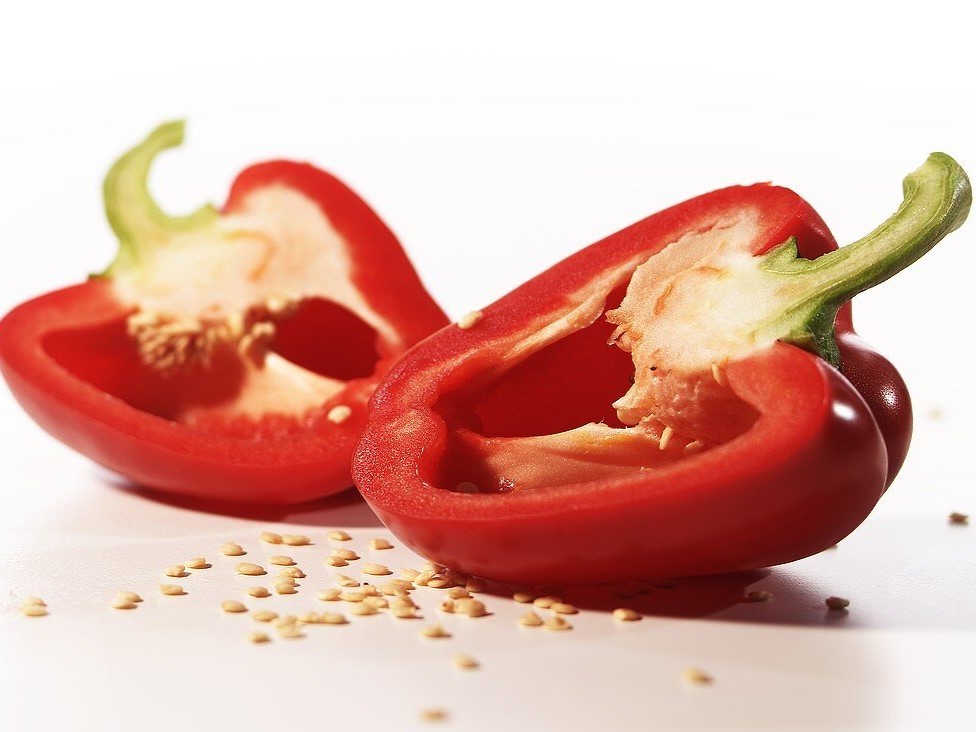
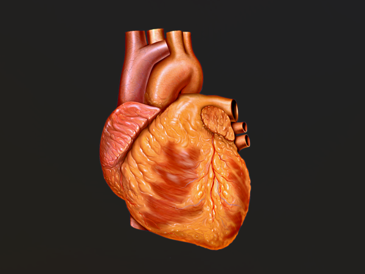

1. Rich in Vitamins and Minerals
Hot chili peppers are packed with essential nutrients, including vitamin C, vitamin A, vitamin K, and various minerals like potassium and manganese. These vitamins and minerals support immune function, promote healthy skin and vision, aid in bone health, and regulate blood pressure.
2. Boosts Metabolism and Weight Loss
Capsaicin, the compound responsible for the heat in chili peppers, has been shown to increase metabolism and promote fat burning. Consuming spicy foods like chili peppers may help boost calorie expenditure, suppress appetite, and aid in weight management when combined with a balanced diet and regular exercise.
3. Provides Pain Relief and Anti-inflammatory Effects
Capsaicin in chili peppers has analgesic properties and is commonly used in topical creams and patches for pain relief from conditions like arthritis and neuropathy. Regular consumption of chili peppers may also help reduce inflammation in the body, potentially lowering the risk of chronic diseases such as heart disease and diabetes.

4. Supports Cardiovascular Health
Studies suggest that capsaicin and other compounds found in chili peppers may have beneficial effects on cardiovascular health by lowering cholesterol levels, improving blood circulation, and reducing the risk of blood clots. Consuming chili peppers as part of a heart-healthy diet may help maintain healthy blood pressure and reduce the risk of stroke and heart attack.
5. Enhances Digestive Health
Chili peppers contain dietary fiber, which aids in digestion and promotes regular bowel movements, preventing constipation and supporting gut health. Capsaicin may also stimulate the production of digestive enzymes and gastric juices, improving nutrient absorption and reducing symptoms of indigestion.
6. Boosts Mood and Cognitive Function
The consumption of chili peppers triggers the release of endorphins, neurotransmitters that promote feelings of pleasure and happiness, leading to an improved mood. Capsaicin has also been studied for its potential neuroprotective effects, which may help reduce the risk of neurodegenerative diseases like Alzheimer's and Parkinson's.